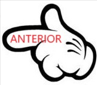
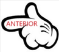

Walt Disney Animation Studios es uno de los estudios de animación más importantes, que produce largometrajes, cortometrajes y especiales de televisión para la Walt Disney Company. Durante estos 78 años, Walt Disney Animation Studios ha desarrollado y evolucionado su tecnología y técnicas de fabricación de películas con el fin de mejorar las animaciones y hacerlas cada vez más realistas. Para ello, se han desarrollado sistemas según las especificaciones que se han querido lograr en cada película y según las tecnologías disponibles en su momento.
Estas innovaciones han sido pioneras y, en su mayoría, adelantadas. Las más importantes son: el rotoscopio para crear movimiento en las caricaturas, el sonido monoaural para incorporar audio a la imagen, el Technicolor para agregar colores, la cámara multiplano para crear mayor realismo y profundidad en las imágenes, el sonido multicanal, específicamente el estereofónico multicanal llamado "Fantasound", adelantándose a lo que hoy conocemos como sonido estéreo y surround, el CinemaScope, con el que se realizó una mezcla de animación con la vida real, la xerografía para facilitar la iteración del dibujo de cada movimiento de las caricaturas, la animación por ordenador utilizando fondos digitales, dejando de lado el tradicional dibujo a mano (animación en lápiz), la computarización de todos los procesos, lo que ha dado lugar a un mayor realismo en las imágenes, las imágenes generadas por computadora, el proceso de animación de metamorfosis (morphing) para lograr transformaciones en los personajes, el sistema "Attila" para crear grandes multitudes, las pinturas en 3D para generar una mejor profundidad y textura en las imágenes, Disney Digital 3D, que realizó una producción totalmente digitalizada, hasta llegar a los softwares más sofisticados utilizados hoy en día, donde se replican mayores características humanas y detalles más realistas. Para hacer esto posible, se han creado softwares propios como XGen y Matterhorn.
| Año | Película | Tecnología Utilizada | Descripción |
|---|---|---|---|
| 1923 | Alice's Wonderland | Rotoscopio | Crear movimiento en las caricaturas y sobreponerlas en cintas de video. |
| 1928 | Steamboat Willie | Monorual | Sincroniza efectos de sonido con música y movimientos. |
| 1932 | Flowers and Trees | Technicolor | Incorporar colores a los cortometrajes. |
| 1937 | Blanca Nieves | Cámara Multiplano | Generar mayor profundidad, movimiento y realismo en la imagen. |
| 1940 | Fantasía | Estereofónico Multicanal | Sonido multirracial lo que genera un sonido "surround". |
| 1961 | 101 Dálmatas | Xerografía | Eficiencia en el dibujo a través de la fotocopia de imágenes mediante un proceso electromagnético. |
| 1989 | La Sirenita | Animación por Ordenador | Utilización de la computadora para unir los dibujos y generar fondos con profundidad. |
| 1991 | La Bella y la Bestia | CAPS (Draw pencil) | Producción a través del computador aún utilizando el tradicional dibujo como base. |
| 1997 | Hércules | Morphing | Sistema para hacer posible la transformación de los personajes (metamorfosis). |
| 1998 | Mulan | Attila | Sistema para hacer posibles gran cantidad de personajes como un ejército. |
| 1999 | Tarzán | Pinturas y Renderizado 3D | Software para crear texturas y fondos más profundos y realistas. |
| 2005 | Chicken Little | Digital | Utilización de nuevos softwares para la creación de personajes de forma tridimensional. |
| 2010 | Enredados | XGen | Tecnología utilizada para crear un realismo extremo donde se puede diseñar cabello, piel y follaje. |
| 2013 | Frozen | Matterhorn | Software creado para el diseño de nieve en todas sus formas. |
Luego de dar este gran paso al color, los productores comenzaron a darse cuenta de que los fondos utilizados eran muy "planos"y poco reales debido a que no tenían profundidad, para esto se desarrolló el sistema de la Cámara Multicanal utilizada en el primer largometraje de Disney, Blanca Nieves (1937).
Esta tecnología consistía en una serie de placas de vidrio con las diferentes "capas de paisaje" las cuales se ponían unas sobre otras a una determinada distancia para así generar profundidad y sensación tridimensional, para generar un mayor realismo esta se iban moviendo cuadro por cuadro para capturar imágenes que luego se unían para crear el largometraje.
Los siguientes 25 años, Walt Disney comenzó a perfeccionar aún más el sonido e imagen de sus largometrajes utilizando tecnologías como Estereofónico Multicanal y Xerografía. El Estereofónico Multicanal fue utilizado en la película Fantasia (1940), esta tecnología también se conoce como Fantasound la cual consistía en un sonido multicanal, con esto Disney se adelantó a tecnologías que hoy conocemos como sonido estéreo y surround. Luego, buscando diferentes estilos en los dibujos, en la película 101 Dálmatas (1961) el cual se realizó completamente con la técnica Xerografía, esta tecnología es la base para lo que hoy conocemos como fotocopiadoras e impresoras, donde "los dibujos se fotocopiaban directamente sobre el acetato mediante un proceso electromagnético, esta técnica desbancó a la técnica de corta vida del entintado fotográfico".Esta tecnología da el efecto de "trazado a lápiz" en esta película quitando el realismo ganado con todos los avances tecnológicos, pero sin esta técnica no hubiese sido posible realizar la película debido al gran número de perros.
Luego con el lanzamiento de Microsoft en 1975 comenzó el uso de la tecnología digital en todas las películas Disney, la primera película en utilizar el computador en su producción fue La Sirenita (1989), esta técnica se utilizó en la última escena en la cual los creadores trabajaron más de un año para crearla, dejando atrás los cientos de dibujos necesarios para realizar un largometraje de estas características. Esta tecnología se conoce por CAPS (Computer Animation Production System) la primera película en utilizar esta tecnología en su totalidad fue La Bella y la Bestia (1991); el sistema CAPS también hizo posible la famosa "estampida de ñuz" del Rey León (1994).
Con el tiempo utilizando el sistema CAPS se comenzaron a desarrollar tecnologías específicas según la película que s quería producir, primero con Hercules (1997) se utilizó la tecnología Morphing con el cual un objeto se puede transformar fácilmente en otro a través de un sistema digital; luego para lograr crear el gran ejército de hunos en Mulan (1998) se utilizó el sistema Attila y para lograr crear la selva y todos sus relieves en Tarzan (1999) se generó una tecnología de Pinturas y Renderizado 3D llamada Deep Canvas (Canvas Profundo) para crear una real sensación 3D en el fondo de la película.
Ya en 2000 se pasó a una era totalmente digital donde se dejó de lado el tradicional dibujo hecho a mano por caricaturas completamente digitalizadas y tridimencionales, la primera en tener este formato fue Chicken Little (2005), luego utilizando solamente la animación digital se siguió avanzando en tecnologías para crear un mayor realismo.
Enredados (2010) fue la primera película digital en diseñar cabello, para esto se creó un software llamado XGen con el cual se logró no solo crear 21 m, si no que también crear un detalle nunca antes visto en la naturaleza, cabello, piel y follaje, entregando un realismo extremo a las imágenes. Esta tecnología fue una revolución creada por Tom Thomson la cual hoy se encuentra en Autodesk donde la puede utilizar cualquier artista especializados en la creación de entretenimiento digital.
Con este afán que ha seguido Disney desde su primer largometraje por generar el mayor realiasmo posible en sus películas se han llegado a crear tecnologías que son capaces de diseñar uno de los mayores desafíos: el hielo en todas sus formas, esta nueva tecnología recibe el nombre Matterhorn y se creó exclusivamente para el éxito más reciente de Disney, Frozen (2013) la cual ganó el "Oscar a la mejor película de animación". Esta tecnología consiste en un algoritmo creado por matemáticos de la Universidad de California en Los Ángeles (UCLA) donde se diseña cada partícula de nieve por sí sola con sus características de densidad, peso y trayectoria para que todas juntas cobren vida y muestren un efecto real al actuar en conjunto.

Para 2016 Disney lanzó dos nuevos largometrajes: "Moana" y "Zootopia". Estas nuevas películas prometen una calidad de animación nunca antes vista donde se diseñarán mares, nubes y animales; para esto The Walt Disney Studios ha desarrollado softwares aún más sofisticados a los utilizados en Enredados y Frozen, donde van a un realismo aún mayor incursionando con elementos con mayor complejidad. En "Zootopia" podremos ver plasmada en la pantalla una ciudad para animales diseñada por animales, la cual tendrá diferentes texturas, estructuras y ambientes.
Por otra parte, The Walt Disney Company no solo forma parte si no que encabeza en el financiamiento del nuevo desarrollo del sistema de realidad virtual (RV), con el cual se tendrá una gran innovación en la producción de las películas con la utilización de una cámara con lentes de 360°, la cual puede llegar a crear una película alrededor de la audiencia, la cual está acorde a las tendencias actuales y puede ser vista a través de Teléfonos inteligentes.
Disney en toda su historia de animación ha estado a la vanguardia de la tecnología, tratando siempre de crear el mayor realismo posible para envolver a la audiencia y transportarla a un mundo de fantasía donde los sueños se hacen realidad, esto se ve más cercano y posible gracias a este nuevo desarrollo de la RV donde el espectador se podrá sentir dentro de la película.